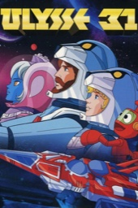
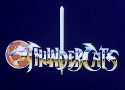
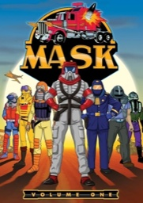

The Saturday Morning Archive takes 1980s cartoons as seriously as any museum takes its collection. Pour a bowl of cereal. Adjust the tracking. Begin.
Ulysses 31, ThunderCats, M.A.S.K., Dungeons & Dragons and Visionaries: five shows, catalogued with the care they always deserved.

Greek myth in space. Zeus condemns Ulysses to wander the universe in his starship, the Odyssey, until he finds the Kingdom of Hades.

Cat-like aliens flee their dying planet, Thundera, and settle on Third Earth.

Their leader, Lion-O, carries the Sword of Omens. Read about it on The Sword of Omens: Sight Beyond Sight.

Cars that transform into armored vehicles, and masks with special powers, against the villains of V.E.N.O.M.
Six kids ride an amusement-park dark ride straight into a fantasy realm. See the full record for Dungeons & Dragons (1983).

On the planet Prysmos, technology stops working, and knights get animal totems and magic staffs.
The viewing room is open by appointment. VCR provided. Broadcast hours for the viewing room are on the about page.
Making your own fan page? Browse Wikimedia Commons, a free media archive, for images you are free to use.
Cartoon artwork on this site is copyrighted and used for classroom teaching.